基礎題
樂譜上常用 f、p 等力度記號來表示樂曲在此處的音量（響度）大小應該如何變化，此類力度記號與聲波的下列何種特性最相關？
- (A) 波長
- (B) 波速
- (C) 頻率
- (D) 振幅
看答案與詳解
答案：(D)
(A) ✘ 波長與頻率、波速有關，不直接決定響度。
(B) ✘ 波速由介質決定，與音量無關。
(C) ✘ 頻率決定音調高低。
(D) ✔ 振幅愈大，響度愈大。
現今智慧型手機可下載許多不同的 App（應用程式），其中一些可用來量測週遭聲波的音量，當音量愈大時，App 顯示的數值也愈大，則此數值的大小主要與聲波的何種性質有關？
- (A) 波長
- (B) 波速
- (C) 振幅
- (D) 頻率
看答案與詳解
答案：(C)
(A) ✘ 波長不決定響度。
(B) ✘ 同一環境中聲速幾乎固定，與音量無關。
(C) ✔ 振幅愈大，響度愈大，App 顯示的分貝數愈大。
(D) ✘ 頻率決定音調。
小銘參加一場「人聲無伴奏」（又稱「阿卡貝拉」）的音樂會，一開始表演時，先由主唱者發出一個音，其他的人陸續發出不同的聲音作為合音，全場完全無樂器演奏，卻是由人聲來模擬樂器伴奏。請問一開始主唱所發出來的音，讓其他歌唱者校準，此動作要校準的是聲音的何項要素？
- (A) 響度
- (B) 音調
- (C) 音色
- (D) 音速
看答案與詳解
答案：(B)
(A) ✘ 響度是大小聲，不需校準成相同。
(B) ✔ 音調由頻率決定，合唱要先定好音高。
(C) ✘ 每個人的音色本來就不同，也無法校準。
(D) ✘ 音速由介質決定，不是聲音三要素，也無法由人改變。
動物圈中的動物明星，白頰長臂猿貝貝，常會在中午發出各種音階不同的叫聲，時而高亢，時而低鳴，往往吸引許多遊客駐足瘋看，都覺得實在太棒了。關於貝貝的鳴叫聲，下列敘述何者是錯誤的？
- (A) 貝貝能發出頻率不同的聲音
- (B) 遊客聽到的叫聲介於 20～20000 Hz 之間
- (C) 貝貝的叫聲是屬於超聲波
- (D) 貝貝聲音的音色與其他動物不同
看答案與詳解
答案：(C)
(B) ✔ 遊客聽得到，頻率必在人耳可聽範圍 20～20000 Hz 內。
(C) ✘ 超聲波頻率高於 20000 Hz，人耳聽不到；遊客聽得到，所以不是超聲波。
(D) ✔ 不同發聲體的波形不同，音色也不同。
本題選錯誤的敘述 → (C)。
「晴朗無風的下午，小新和同學一同去公園打排球，結果把球打到湖泊中央，為了撿球，他們拿了一堆石頭以拋物線模式一一丟向球的附近，希望利用水面出現上下振動的水波能把球推回岸邊……」關於上述短文，下列敘述何者正確？
- (A) 只要多丟幾次石頭，上下振動的水波就可以把球推回岸邊
- (B) 石頭入湖中會產生上下振動的水波，此水波主要是縱波
- (C) 此方式只會使球在原處附近上下振動，無法明顯向岸邊移動
- (D) 此方式的原理是利用水波具有傳送物質的能力來撿回排球
看答案與詳解
答案：(C)
(A) ✘ 丟再多次，球仍只在原處上下起伏。
(B) ✘ 水面上下振動、波向外傳，振動方向與前進方向垂直，主要是橫波。
(C) ✔ 漂浮的球跟著水面在原處上下振動，不會被送到岸邊。
(D) ✘ 波不傳送物質。
〔易錯〕看到「波往岸邊傳」就以為東西會被帶過去
小華與小美分別朝同一口井的井口喊話，已知小華的聲音頻率為 240 Hz、小美的聲音頻率為 480 Hz。若小華喊話後聽見回聲需要 0.4 秒，則小美喊話後聽見回聲需要幾秒？
- (A) 0.2
- (B) 0.4
- (C) 0.8
- (D) 1.6
看答案與詳解
答案：(B)
同一口井 → 距離相同；同在空氣中 → 聲速相同（聲速由介質決定，與頻率無關）。
所以小美聽見回聲的時間也是 0.4 秒 → (B)。
頻率加倍只會使波長減半：λ＝v／f。
〔易錯〕以為頻率愈高聲音跑得愈快
如圖，老師在講台上用力敲擊音叉，音叉發出 Do（中央 C）的聲音。已知教室內的牆壁皆粗糙不產生回聲，若甲同學接收到此聲波的頻率為 262 Hz、響度為 30 分貝，則乙同學接收到的聲波與甲同學的相比，應為下列何者？
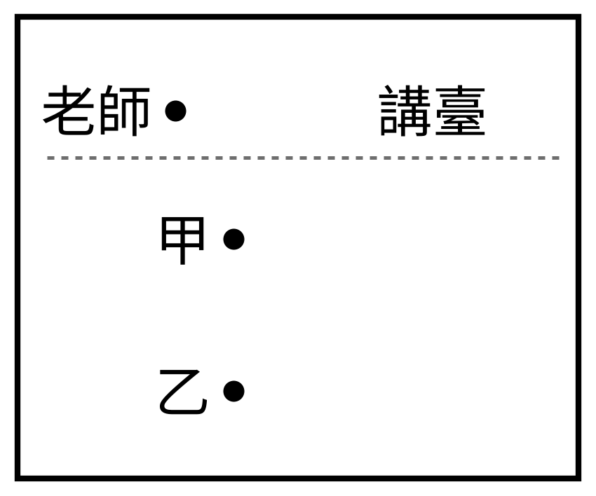
- (A) 乙同學接收到的聲波音調較高
- (B) 乙同學接收到的聲波頻率較低
- (C) 乙同學接收到的聲波響度較大
- (D) 乙同學接收到的聲波振幅較小
看答案與詳解
答案：(D)
頻率由波源決定，傳播過程不變 → 乙收到的也是 262 Hz，音調相同。
聲波傳得愈遠，能量愈分散，振幅愈小 → 響度愈小。
(A) ✘ 音調相同。(B) ✘ 頻率相同。(C) ✘ 乙較遠，響度較小。(D) ✔ 乙收到的振幅較小。
定音鼓是一種打擊樂器，以鼓棒敲擊鼓面後，鼓內的空氣會振動而發出固定音調的聲音。已知一定音鼓被敲擊時，鼓面每分鐘會振動 12000 次，若小黑單手持鼓棒，每隔 0.5 秒敲擊此定音鼓的鼓面，則此時定音鼓發出聲音的頻率為多少 Hz？
- (A) 200
- (B) 400
- (C) 6000
- (D) 24000
看答案與詳解
答案：(A)
f＝12000 次 ÷ 60 s＝200 Hz → (A)。
每 0.5 秒敲一次只是敲擊的節奏（每秒 2 下），不是鼓面振動的頻率。
〔易錯〕把敲擊次數 2 次／秒乘進去而得 400 Hz
如表中兩個音階的唱名同為 Do，但中央 C 與高音 C 的頻率卻不相同。若兩者在相同條件空氣中的傳播速率相同，波長分別為 λ1、λ2，則 λ1／λ2 為多少？
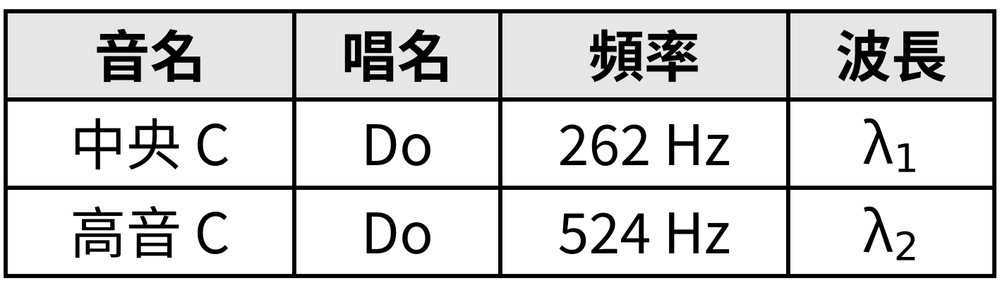
- (A) 0.25
- (B) 0.5
- (C) 1
- (D) 2
看答案與詳解
答案：(D)
λ1／λ2＝f2／f1＝524／262＝2 → (D)。
〔易錯〕直接用頻率比 262／524＝0.5，忘了波長與頻率成反比
某日氣溫為 25℃，空氣中的聲速可用 v＝331＋0.6T（m/s，T 為攝氏溫度）估算。若有一個頻率為 500 Hz 的聲音在當時的空氣中傳播，則其波長約為多少？
- (A) 0.03 m
- (B) 0.66 m
- (C) 0.69 m
- (D) 1.45 m
看答案與詳解
答案：(C)
再求波長：λ＝v／f＝346÷500≒0.69 m → (C)。
(A) ✘ 只用 0.6×25＝15 當聲速。
(B) ✘ 0.66 m 是用 331 m/s（0℃）計算，忘了溫度修正。
(D) ✘ 500÷346≒1.45，把頻率與波速顛倒相除。
進階題
平靜無風的下午，在許願池上 O 點丟入一枚硬幣，使水面上產生一個圓形水波，已知圓形水波的半徑每秒增加 1 m。若丟入硬幣前，在水面上距離 O 點 1 m 及 2 m 的 P、Q 兩點，分別有一片落葉，且 O、P、Q 在同一直線上，如圖所示，則硬幣丟入水中 3 秒後，兩片落葉的距離約為多少？
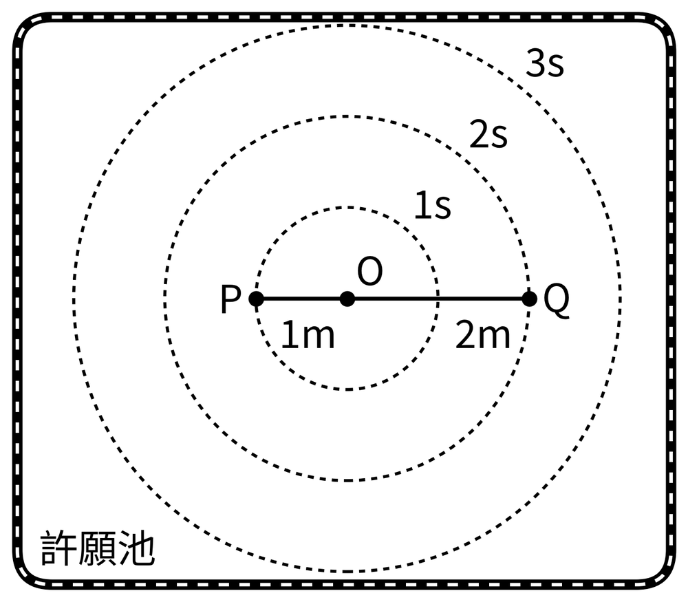
- (A) 3 m
- (B) 5 m
- (C) 6 m
- (D) 9 m
看答案與詳解
答案：(A)
由圖，P、Q 分別在 O 的兩側，P 距 O 1 m、Q 距 O 2 m → 兩葉相距 1＋2＝3 m。
3 秒後波已傳到半徑 3 m 處，但落葉仍在原位附近 → 距離仍約 3 m → (A)。
〔易錯〕以為落葉被波推走，3 秒後各移動 3 m
大軍在溫度 15℃、乾燥無風的環境中敲擊一音叉，音叉發出聲波的波形與時間關係如圖所示，已知當時聲波的波速為 34000 cm/s，則下列敘述何者錯誤？
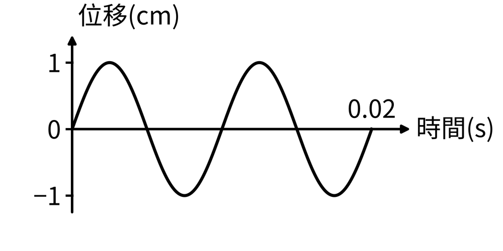
- (A) 聲波屬於橫波
- (B) 週期為 0.01 s
- (C) 頻率為 100 Hz
- (D) 波長為 340 cm
看答案與詳解
答案：(A)
(A) ✘ 聲波在空氣中是縱波（示波器把疏密變化畫成波形，不代表是橫波）。
(B) ✔ T＝0.01 s。
(C) ✔ f＝1／T＝1÷0.01＝100 Hz。
(D) ✔ λ＝v／f＝34000÷100＝340 cm。
本題選錯誤的敘述 → (A)。
小蘭在教室裡，先後用音叉發出兩次不同的聲波，經示波器轉換後，其聲波介質的振動位移與時間關係如圖甲、乙所示。假設圖中座標每格表示的長度、時間皆相同，則下列敘述何者正確？
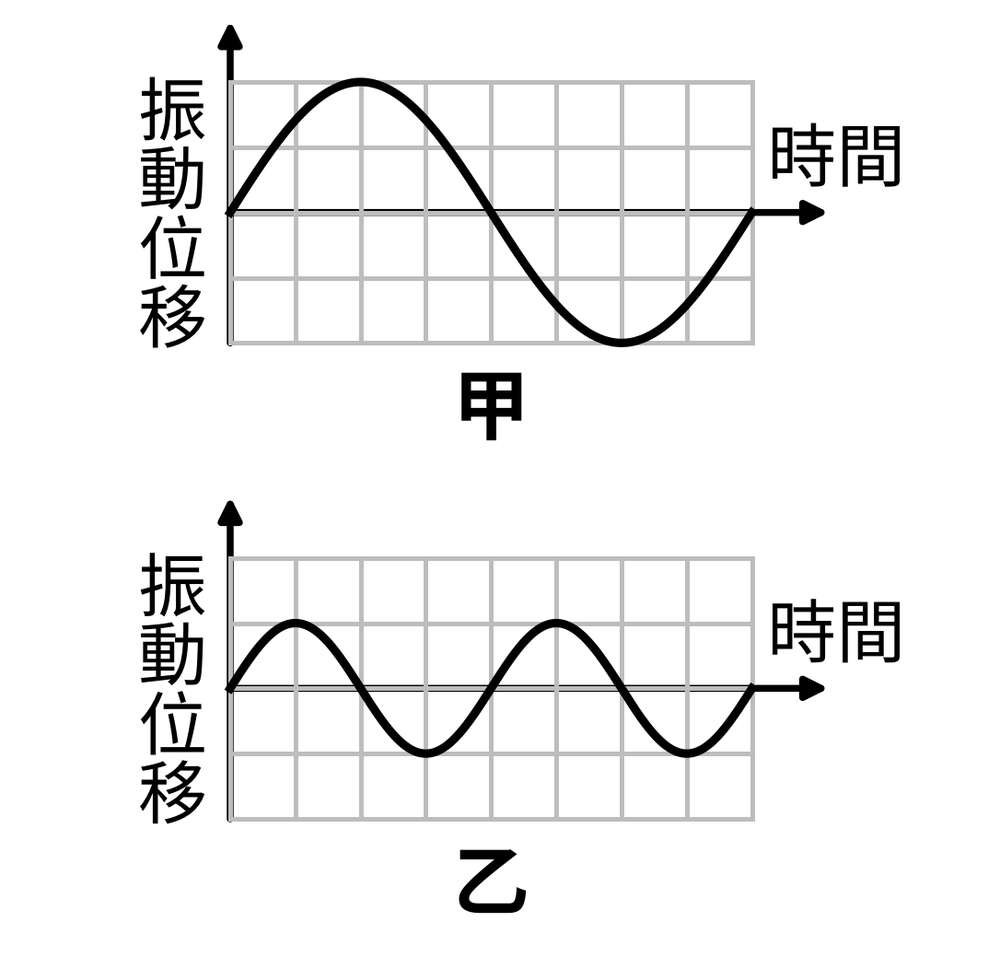
- (A) 甲聲波的響度比乙聲波大，音調比乙聲波高
- (B) 甲聲波的響度比乙聲波大，音調比乙聲波低
- (C) 甲聲波的響度比乙聲波小，音調比乙聲波高
- (D) 甲聲波的響度比乙聲波小，音調比乙聲波低
看答案與詳解
答案：(B)
頻率：同樣 8 格時間內，甲只有 1 個完整波，乙有 2 個 → 乙頻率是甲的 2 倍 → 甲音調較低。
(A) ✘ 甲音調較低。(B) ✔。(C)(D) ✘ 甲響度較大。
一週期性繩波的波長為 60 cm，振幅為 25 cm，頻率為 2 Hz，在時間 t＝0 s 時的波形如圖所示，已知 P 為繩上一點，則在 t＝0～2.5 s 期間，P 點移動的平均速度大小為多少？
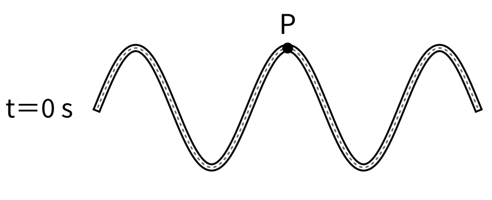
- (A) 0
- (B) 20 cm/s
- (C) 120 cm/s
- (D) 200 cm/s
看答案與詳解
答案：(A)
P 點只在原處上下振動，經過整數個週期後回到原來位置（波峰），位移為 0。
平均速度＝位移 ÷ 時間＝0 ÷ 2.5＝0 → (A)。
補充：P 走過的路徑長＝5×4×25＝500 cm，平均速率＝200 cm/s，那是選項 (D) 的陷阱。
(C) 120 cm/s 是波速 v＝λf＝60×2，P 點並不隨波前進。
以繩波產生器分別在甲、乙兩繩上製造不同的繩波，甲繩上某點振動位移與時間的關係如附圖所示。已知甲繩的振動頻率大於乙繩，則下列各選項中的圖形，何者最可能表示乙繩上某點的振動情形？
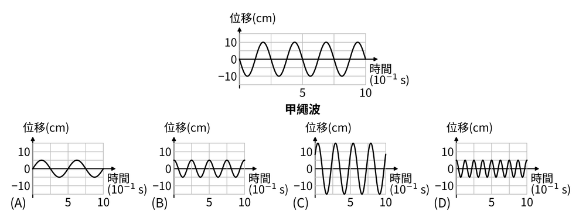
看答案與詳解
答案：(A)
乙繩頻率要小於 4 Hz → 同樣時間內完整波的個數要少於 4 個。
(A) ✔ 2 個波，f＝2 Hz＜4 Hz。
(B) ✘ 4 個波，f＝4 Hz，與甲相同。
(C) ✘ 4 個波，只是振幅較大，頻率與甲相同。
(D) ✘ 8 個波，f＝8 Hz，比甲大。
〔易錯〕振幅大小與頻率無關，只能數波的個數
一列繩波向右傳播，某瞬間的波形如圖所示，繩上有甲、乙、丙、丁四點。此瞬間正在向上運動的是哪兩點？
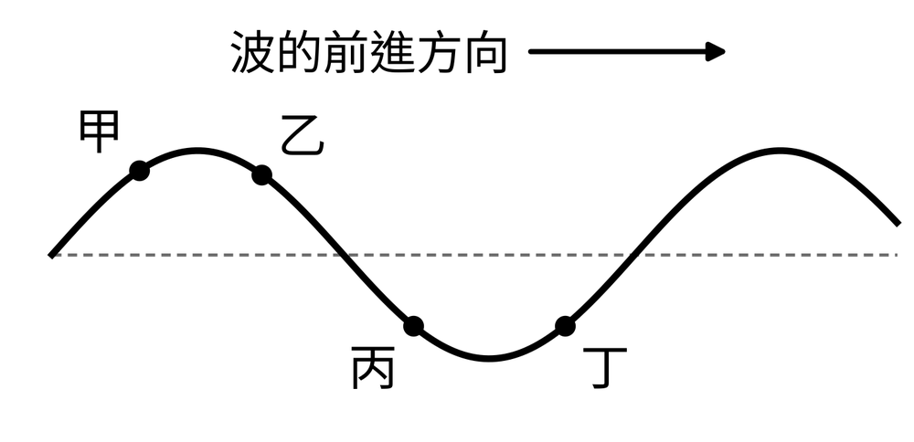
- (A) 甲、乙
- (B) 乙、丙
- (C) 丙、丁
- (D) 甲、丁
看答案與詳解
答案：(B)
甲：在波峰左側（上坡）→ 波峰前進後，甲的位置會被較低的部分取代 → 向下。
乙：在波峰右側（下坡）→ 波峰正要來到 → 向上。
丙：在波谷左側（下坡）→ 波谷已過、上坡正要來 → 向上。
丁：在波谷右側（上坡）→ 波谷正要來到 → 向下。
向上的是乙、丙 → (B)。
〔口訣〕波往右走：下坡的點往上、上坡的點往下
瀚瀚拿著拔河繩在地上甩動形成繩波，一旁的朋友所拍攝的拔河繩形狀變化照片如圖所示，已知兩張照片的時間間隔為 0.3 秒，則關於此繩波的敘述，下列何者正確？
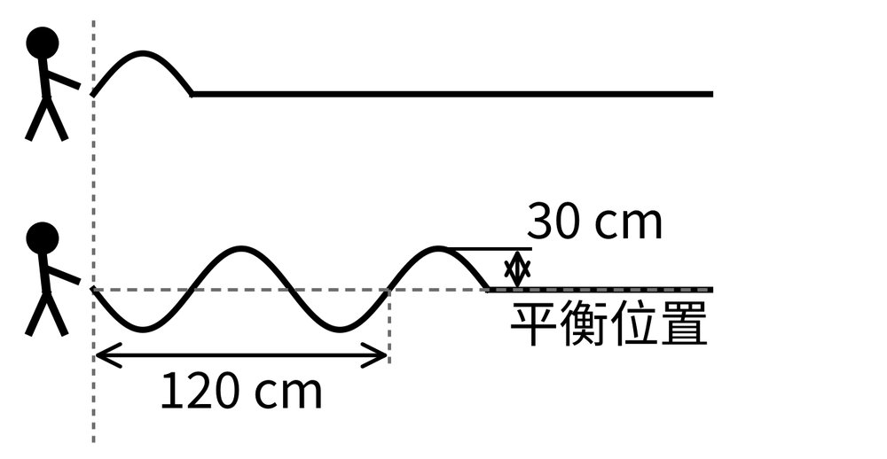
- (A) 此繩波的波速為 36 cm/s
- (B) 此繩波的波長為 120 cm
- (C) 此繩波的振幅為 60 cm
- (D) 繩上某一點經過一次來回完整振動時，移動的距離為 120 cm
看答案與詳解
答案：(D)
(A) ✘ 波的前端由 40 cm（半個波）推進到 160 cm（2 個波），0.3 s 內前進 120 cm → v＝120÷0.3＝400 cm/s；36 cm/s 是把 120×0.3 誤算。
(B) ✘ 120 cm 是 1.5 個波長，λ＝80 cm。
(C) ✘ 振幅是平衡位置到波峰 30 cm，不是峰到谷 60 cm。
(D) ✔ 完整振動一次：上 A、下 A、下 A、上 A，共走 4A＝4×30＝120 cm。
垃圾車收垃圾地點的順序及各站間距離如圖所示。垃圾車每停一站便會開始播放音樂提醒附近的居民來倒垃圾，垃圾車在第 1 站停下來播放音樂並收垃圾，若忽略風及溫度對聲速的影響，則此時在第 2 站的小強與第 3 站的小樂聽到音樂傳來的時間差為下列何者？（當時聲速為 340 m/s）
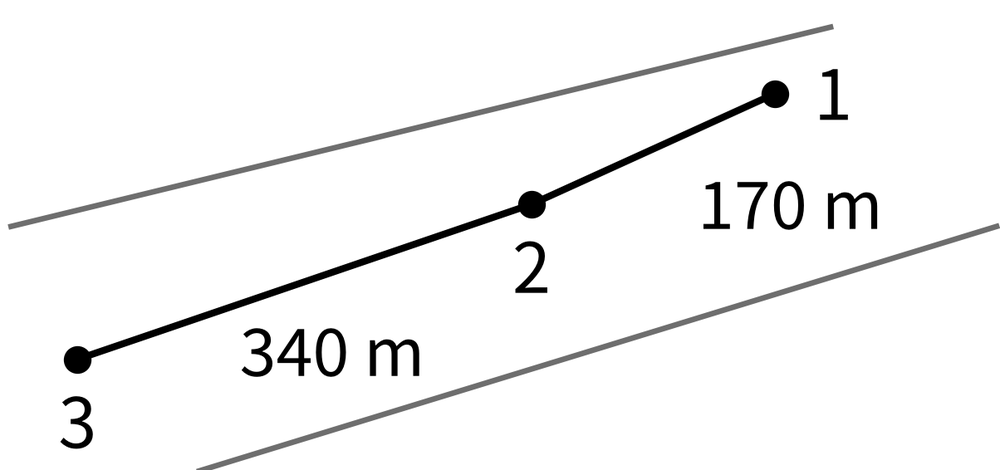
- (A) 0
- (B) 1.0 s
- (C) 1.5 s
- (D) 2.0 s
看答案與詳解
答案：(B)
小強（第 2 站）距聲源 170 m → t2＝170÷340＝0.5 s。
小樂（第 3 站）距聲源 170＋340＝510 m → t3＝510÷340＝1.5 s。
時間差＝1.5－0.5＝1.0 s → (B)（也可直接用多走的 340 m ÷ 340 m/s＝1.0 s）。
〔易錯〕把 340 m 當成第 3 站到第 1 站的距離而得 0.5 s
汽車的倒車雷達，是利用發出超音波遇到障礙物反射，再根據接收時間長短，判定是否距離障礙物太近，進而加強警示駕駛人。若設定為距離小於 3.4 公尺需加強警示，則駕駛人一開始聽到加強警示音時，下列雷達從發出到接收反射超音波時間的說明，何者合理？（空氣中聲速約為 340 m/s）
- (A) 超音波波速較聲音快，時間應小於 0.01 秒
- (B) 超音波波速較聲音慢，時間應大於 0.01 秒
- (C) 超音波波速和聲音相同，時間應約為 0.01 秒
- (D) 超音波波速和聲音相同，時間應約為 0.02 秒
看答案與詳解
答案：(D)
反射回來要走來回距離：2×3.4＝6.8 m。
t＝6.8÷340＝0.02 s → (D)。
(A)(B) ✘ 波速相同。(C) ✘ 0.01 s 只算了單程。
〔易錯〕回聲問題忘了乘 2
會考／素養題
「白噪音」為一種人類可聽見的聲波，此聲波在各頻率的響度大致相同。在自然界中，類似的聲音包括雨聲、海浪聲等，而家中電風扇所製造出的聲音也與白噪音相似。科學家研究發現，嬰兒處在有此種白噪音的環境下，會比較容易入睡。根據上述，下列響度與頻率的關係圖，何者最適合用來表示此種幫助入睡的白噪音？
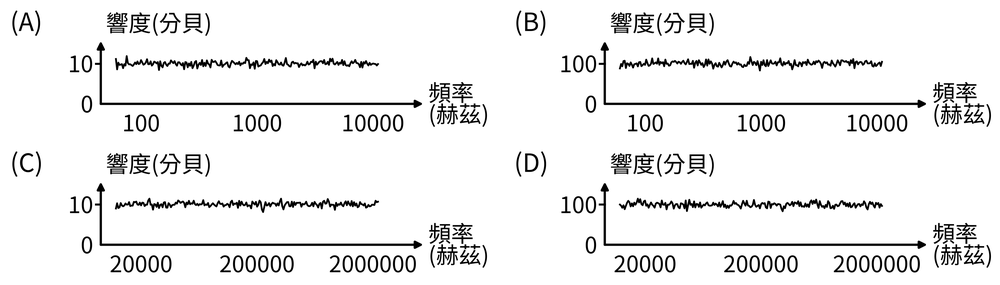
看答案與詳解
答案：(A)
條件二「幫助嬰兒入睡、像雨聲」→ 響度應很小：(A) 約 10 分貝；(B) 約 100 分貝，遠超過 70 分貝，屬於傷害聽力的噪音。
兩條件都符合 → (A)。
▲ 第 1-21～1-22 題為題組：如圖，某日，外海發生沉船意外，搜救單位派遣直升機至現場，已知此直升機可發出頻率 700 Hz 的聲波，且聲波在空氣中的傳播速率為 340 m/s，在水中的傳播速率為 1500 m/s。
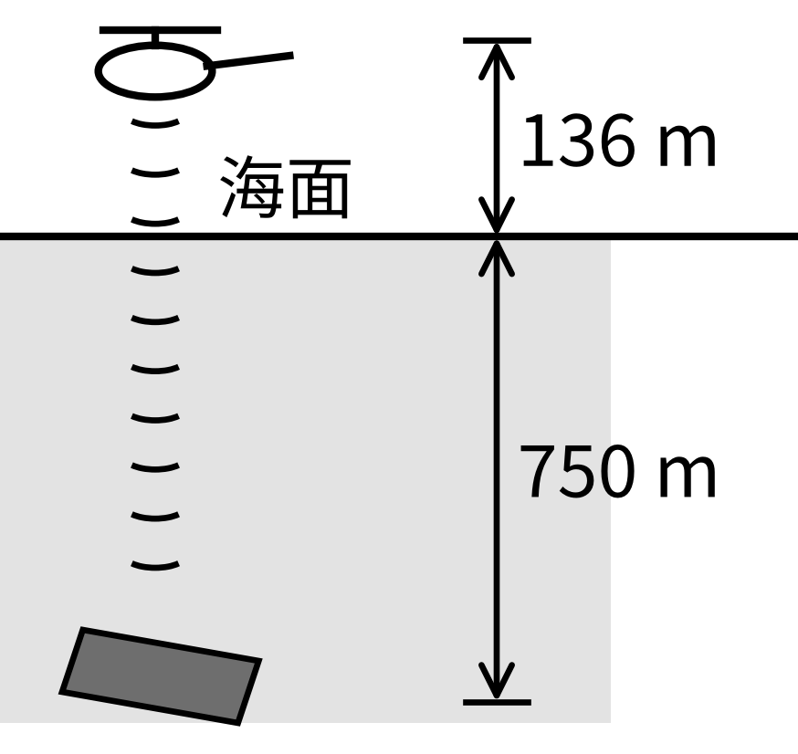
有關直升機發出的聲波，下列敘述何者正確？
- (A) 為縱波
- (B) 為超聲波
- (C) 為非力學波
- (D) 在真空中傳遞的速率比在空氣中快
看答案與詳解
答案：(A)
(B) ✘ 700 Hz 在 20～20000 Hz 之間，是人耳聽得到的聲音，不是超聲波。
(C) ✘ 聲波需要介質傳播，屬於力學波。
(D) ✘ 真空中沒有介質，聲波無法傳遞。
直升機發出的聲波約需要多久的時間才可傳至沉船所在位置？
- (A) 0.6 秒
- (B) 0.9 秒
- (C) 2.3 秒
- (D) 2.6 秒
看答案與詳解
答案：(B)
空氣中：136 m ÷ 340 m/s＝0.4 s。
水中：750 m ÷ 1500 m/s＝0.5 s。
總時間＝0.4＋0.5＝0.9 s → (B)。
(D) ✘ (136＋750)÷340≒2.6 s 是全部用空氣中聲速計算；(A) ✘ (136＋750)÷1500≒0.6 s 是全部用水中聲速計算；(C) ✘ 136÷1500＋750÷340≒2.3 s 是兩段聲速對調。
圖為妮妮向小櫻演示共振現象實驗的過程。面對小櫻的質疑，妮妮增加下列哪一個實驗來說服小櫻最合適？
- (A) 減輕敲擊音叉的力量，觀察敲擊後是否會共振
- (B) 將其中一支音叉更換成頻率為 500 Hz 的音叉，觀察敲擊後是否會共振
- (C) 將兩支音叉更換成頻率同為 500 Hz 的兩支音叉，觀察敲擊後是否會共振
- (D) 將其中一支音叉更換成頻率為 360 Hz 但大小不同的音叉，觀察敲擊後是否會共振
看答案與詳解
答案：(B)
(A) ✘ 改變的是敲擊力量（響度），兩音叉頻率仍相同。
(B) ✔ 一支 360 Hz、一支 500 Hz，頻率不同；若不會共振，即可證明頻率不同不會共振。
(C) ✘ 兩支仍是頻率相同，只是重複原實驗。
(D) ✘ 兩支仍同為 360 Hz，只改變大小。
〔觀念〕操縱變因要設為「頻率是否相同」
漁船上的聲納向正下方的海水發出頻率 50000 Hz 的超聲波，經過 0.04 秒後收到魚群反射回來的訊號。已知海水中的聲速為 1500 m/s，下列有關此次探測的敘述，何者正確？
- (A) 此超聲波在海水中的波長為 3 cm
- (B) 魚群位於漁船下方約 60 m 處
- (C) 此超聲波在海水中的傳播速率比人耳聽得到的聲音快
- (D) 魚群反射回來的超聲波頻率會比發出時低
看答案與詳解
答案：(A)
(B) ✘ 0.04 s 是來回時間 → 深度＝1500×0.04÷2＝30 m；60 m 是忘了除以 2。
(C) ✘ 在同一介質中，超聲波與可聽聲的波速相同。
(D) ✘ 反射不改變頻率，回聲的頻率與原聲相同。
鑑識員美美在調查犯罪現場的錄影資料時，發現示波器上顯示在同一段時間內，出現三種聲音的波形如圖，下列推論何者最合理？
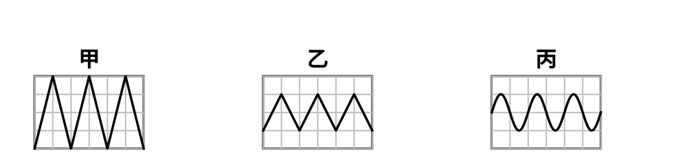
- (A) 甲乙可能來自相同發音體
- (B) 乙丙可能來自相同發音體
- (C) 響度由大到小依序為甲＞乙＞丙
- (D) 音調由高到低依序為甲＞乙＞丙
看答案與詳解
答案：(A)
波形（音色）：甲、乙都是鋸齒狀三角波，形狀相同；丙是平滑的正弦波，形狀不同。
振幅（響度）：甲上下共 4 格（振幅 2 格）；乙、丙都是上下 2 格（振幅 1 格）。
頻率（音調）：同樣 6 格內，甲、乙、丙都是 3 個完整波，頻率相同。
(A) ✔ 甲、乙波形相同（音色相同），只差在響度，可能是同一發音體發出大小聲。
(B) ✘ 乙、丙波形不同，音色不同。
(C) ✘ 乙、丙響度相同。
(D) ✘ 三者音調相同。